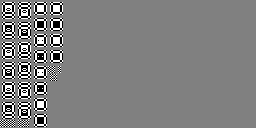

vc2-bit-width-test-pictures¶
Generate test pictures for VC-2 encoders and decoders which produce extreme (large-magnitude) signal values.
Example usage¶
In the example below we generate a series of test pictures for encoders and decoders which use/expect:
2-level 2D LeGall (5, 3) transform
A particular custom quantisation matrix
10-bit pictures
HD (1920x1080) resolution pictures with 4:2:2 colour subsampling
This tool generates test pictures for a single picture component at a time.
Where picture components have different resolutions (as in this example) the
vc2-bit-width-test-pictures command must be used twice.
$ vc2-static-filter-analysis \
--wavelet-index le_gall_5_3 \
--dwt-depth 2 \
--output static_analysis.json
$ mkdir luma_test_pictures
$ vc2-bit-width-test-pictures \
static_analysis.json \
1920 1080 \
--picture-bit-width 10 \
--custom-quantisation-matrix \
0 LL 1 \
1 HL 2 1 LH 0 1 HH 4 \
2 HL 1 2 LH 3 2 HH 3 \
--output-directory luma_test_pictures
$ mkdir color_diff_test_pictures
$ vc2-bit-width-test-pictures \
static_analysis.json \
1920 540 \
--picture-bit-width 10 \
--custom-quantisation-matrix \
0 LL 1 \
1 HL 2 1 LH 0 1 HH 4 \
2 HL 1 2 LH 3 2 HH 3 \
--output-directory color_diff_test_pictures
$ ls luma_test_pictures/
analysis_0.json synthesis_1_qi35.json synthesis_6_qi48.json
analysis_0.png synthesis_1_qi35.png synthesis_6_qi48.png
synthesis_0_qi34.json synthesis_2_qi44.json synthesis_7_qi49.json
synthesis_0_qi34.png synthesis_2_qi44.png synthesis_7_qi49.png
synthesis_10_qi52.json synthesis_3_qi45.json synthesis_8_qi50.json
synthesis_10_qi52.png synthesis_3_qi45.png synthesis_8_qi50.png
synthesis_11_qi54.json synthesis_4_qi46.json synthesis_9_qi51.json
synthesis_11_qi54.png synthesis_4_qi46.png synthesis_9_qi51.png
synthesis_12_qi58.json synthesis_5_qi47.json
synthesis_12_qi58.png synthesis_5_qi47.png
The two generated directories containing test pictures suitable for testing the luminance and colour-difference picture components.
Test picture format and usage¶
The test pictures generated by this software are saved as 8-bit monochrome PNG images, regardless of the picture bit width specified. These pictures must be extended to the correct picture bit width before use. The test pictures contain only black (minimum signal level), mid-gray (0) and white (maximum signal level) pixels. An example is shown below:
Analysis test pictures have names of the form analysis_*.png. These must be
presented to an encoder under test and the output validated against a reference
implementation. The results should be comparable with those achieved by the
reference implementation.
Synthesis test pictures have names of the form synthesis_*_qi*.png. These
must first be encoded using an encoder configured to use the quantisation index
given in the filename (after qi) for all picture slices. The encoded
pictures must be presented to the decoder under test and compared with a
reference implementation. The results should be bit-for-bit identical.
JSON metadata format¶
Each test picture (*.png) is accompanied by a JSON metadata file
(*.json) with a matching name. This JSON file enumerates the test patterns
contained within the picture and which values within an encoder or decoder
implementation are being targeted.
Each file has the following structure:
[
{
"level": 1,
"array_name": "L''",
"x": 0,
"y": 0,
"maximise": true,
"tx": 2,
"ty": 4
},
...
]
Each object describes a particular test pattern within the picture and its intended target within the encoder or decoder.
The level, array_name, x and y values define the specific
filter phase targeted (see Terminology).
The maximise value is true for patterns intended to maximise a signal
value and false for those intended to minimise.
The tx and ty values give the coordinates of the specific value within
the targeted filter array which is being targeted by the pattern.
Arguments¶
The complete set of arguments can be listed using --help
usage: vc2-bit-width-test-pictures [-h]
[--picture-bit-width PICTURE_BIT_WIDTH]
[--custom-quantisation-matrix CUSTOM_QUANTISATION_MATRIX [CUSTOM_QUANTISATION_MATRIX ...]]
[--verbose]
[--output-directory OUTPUT_DIRECTORY]
static_filter_analysis width height
[optimised_synthesis_test_patterns]
Generate test pictures for VC-2 encoders and decoders which produce extreme
(large-magnitude) signal values.
positional arguments:
static_filter_analysis
The static analysis JSON data produced by vc2-static-
filter-analysis.
width The width (in samples) of the test pictures to
generate.
height The height (in samples) of the test pictures to
generate.
optimised_synthesis_test_patterns
A set of optimised synthesis test patterns produced by
vc2-optimise-synthesis-test-patterns.
optional arguments:
-h, --help show this help message and exit
--picture-bit-width PICTURE_BIT_WIDTH, -b PICTURE_BIT_WIDTH
The number of bits in the picture signal.
--custom-quantisation-matrix CUSTOM_QUANTISATION_MATRIX [CUSTOM_QUANTISATION_MATRIX ...], -q CUSTOM_QUANTISATION_MATRIX [CUSTOM_QUANTISATION_MATRIX ...]
Use a custom quantisation matrix. Optional except for
filters without a default quantisation matrix defined.
Should be specified as a series 3-argument tuples
giving the level, orientation and quantisation matrix
value for every entry in the quantisation matrix.
--verbose, -v Show more detailed status information during
execution.
--output-directory OUTPUT_DIRECTORY, --output OUTPUT_DIRECTORY, -o OUTPUT_DIRECTORY
The name of the directory to write the generated test
patterns and metadata files to. Must already exist.
Existing files will be overwitten. (Default: .).